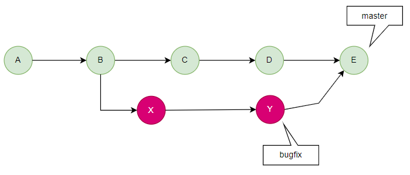
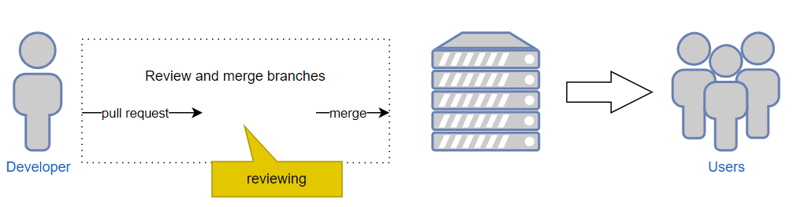

Git协同开发
一. 基本知识
大家在看这篇文章的时候，希望能懂基本的操作。
1.1 Git基本操作
git add、git commit、git push.......，大家看下面这张图就可以了
1.2 分支
首先我们需要理解的就是分支的概念，分支的本质是一个轻量级的可移动指针，我们在创建分支的时候实际上只是创建了一个新的指针， 指向当前分支指针所指向的提交，分支的存在使得多个开发路径可以同时进行，每个分支都可以独立地进行开发和修改，而不会互相干扰。
◆ 我们创建分支的时候,其实是创建了一个指向当前提交的指针。那么Git是如何知道我们在哪个分支上工作的呢？ 其实是它保存的一个'HEAD'的特别指针，'HEAD'是一个特殊的指针，用于表示当前所在的位置或当前所在的分支的最新提交。
git branch tutu01 //创建分支
git checkout tutu01 //切换到分支
◆ 我们随即在tutu01分支执行一个提交。

git symbolic-ref HEAD \\显示'HEAD'指针所在的分支名称
git log -1 (--pretty=%d) HEAD \\显示'HEAD'信息
或者我们可以直接去 “.git\refs\heads”下面查看
◆ 当然 'HEAD'指针还有一些东西，比如~(tilde) 和^(caret) ，在普通情况下 是等效的。但是在合并提交中，是有区别的。
1.3 分支的操作
◆ git pull 命令用于从远程仓库获取最新的提交并将其合并到当前分支。 它相当于 git fetch 和 git merge 两个命令的组合。运行 'git pull '会发生以下情况：
①假如当前分支与远程分支有共同的提交历时，并且没有冲突，将自动合并远程分支的更新到当前分支。
②如果当前分支与远程分支有不同的提交历史，将尝试自动合并这些更新。如果存在冲突，你需要手动解决冲突后再提交。
◆ git fetch 命令，用于从远程仓库获取更新的提交和分支信息的命令，它并不会自动合并或修改本地分支,它会产生以下操作：
①从远程仓库下载更新的提交对象和分支引用。
②更新本地仓库中的远程分支引用，但不会修改本地分支和工作目录。
我们可以从‘FETCH_HEAD’ref查看信息
◆ push branch to remote
①担当我们推送到远程仓库的时候，git 将会做一个快速合并（fast-forward merge）的操作。 快速合并操作是指将一个分支的提交直接合并到另一个分支的最新提交上，没有产生河外的提交节点，这种合并方式非常简洁和直接。
②当目标分支也有更新，本地分支也有更新，两者没有直接的关系的时候就会产生一个非快进合并（non-fast-forwardmerge）。 （这可能是由于你的分支和目标分支同时有新的提交，彼此没有共同的提交历史；目标分支上的提交被回滚或者撤销，而你的分支没有）。 为了防止意外的覆盖和数据丢失，Git会拒绝非快进合并的操作。确保仓库中的提交历时保持一致和完整性。 当然你也可以用'--force'参数来强制推送，但是一定要小心，因为它可能会导致其他人的工作丢失或产生冲突，应确保在了解后果并与团队成员协商后在考虑此方法。
要解决这个问题，需要先pull最新的更新到本地，然后再push。
1.4 Git工作流
◆ Branching workflows
Git分支工作流是一种组织和管理Git代码库中的分支的方法。它定义了如何创建、使用和合并分支以及团队成员之间的协作方式。以下是几种常用的分支工作流：
①Master
主分支通常用于发布稳定的、可部署的代码，永久存在的分支
②Feature branch (aka Topic branch)
每个新功能都在一个独立的特性分支上开发，通常是基于Develop branch创建的。
③Release branch
当我们要推出新版本的时候，创建realease branch，realease branch可以帮助我们来确定新的功能是否能正常的运行，一般是在小批试样阶段。 当我们小批试样结束，就要把这个分支合并到Master，并打一个tag。
④Hotfix branch
Hotfix 分支通常在我们需要对我们的代码库进行bug修复的时候，通常是从Master检出，修复完合并到Master，并重新提交pull request审核。
④Develop branch (aka Integration branch)
是一个用于进行整体开发和集成的分支，开发分支通常与主分支分离，主分支保持稳定和可部署的状态，而开发分支用于整体开发和集成工作。 新的分支的创建通常基于Develop 分支，所以这也应该是一个永久存在的分支。
二. 方法
这里建议使用一款IDE来管理。
2.1 Git工作流程图示
2.2 场景用例
①正常流程
项目组A开发一款软件，管理者创建了仓库和分支'Master'、'Develop'。并和SE一起将软件的架构和需求整理好，将任务分给组员，猿B和媛C。
猿B和媛C把'Develop'分支clone到自己的电脑中，并分别开发自己的组件。
猿B和媛C同时创建了临时分支'feature'，并开始编写代码实现。
猿B首先开发完成，经过一系列开发测试之后，觉得没有问题了，随后整理好测试记录就合并到了本地的'Develop'分支，并删除了'feature'分支。
随即基于'Develop'分支创建临时分支'Realease'，并发出测试记录和变更日志放进去。确认没问题之后，合并到'Develop'分支。并建立一个PR到云仓库'Develop'分支。
Maintianer收到PR之后集合Dveloper、Reporter进行评审，决定是否合并到云仓库'Develop'。
媛C看到猿B提交的记录，并根据变更信息，决定是否要更新自己的。
媛C也开发完自自己的代码，通过了PR。
猿B和媛C的代码都通过了评审和测试之后，Maintainer负责创建'realsease'分支进行软件的预发布、小批量试样。
小批量试样通过后，Maintainer负责合并到'Master'分支，并打一个tag。'Master'分支作为稳定、可部署的分支，可以作为出批量出厂程序。
②bug修复00
产品在运行一段时间后，发现了问题，Maintainer初步预判认为是猿B的组件部分造成的。 于是基于'Master'创建 临时分支'hotfix'，并指派猿B去解决这个问题。
猿B接到指派，将云端'hotfix' clone到本地，随即开始解决问题。
猿B解决完问题，重新提交PR。
Maintainer收到PR之后集合Dveloper、Reporter进行评审，决定是否合并到云仓库'hotfix'。
评审和回归测试完毕，Maintainer将'hotfix'分支合并到'Master'，并删除'hotfix'分支，打一个tag。
③bug修复01
猿B开始解决问题的时候发现并不是自己的组件造成的，是媛C的组件造成的。
猿B将自己的理由和记录写上，并提交PR。Maintainer收到PR，集合猿B和媛C进行讨论，最后同意了PR。
媛C开始拉取'hotfix'进行修复。
tips: 问题发现的越早成本越低，假如问题在需求分析阶段被发现的成本是1，那么它在批量之后被发现的成本就会高达500-1000。2.3 分支合并
◆ Merge
①fast-foward
合并到另一个分支时，被合并分支中的所有更改都会被纳入目标分支，而且被合并分支的历史记录也会被保留。
②no-fast-foward
如果存在冲突，或者为了保留合并的历史记录，版本控制系统会生成一个合并提交。 这样的合并提交可以被看作是将不同分支的修改整合在一起的快照。同时，'Master'（或主分支的名称）的位置也会被更新到新创建的合并提交。 这意味着主分支将指向合并提交的位置，将合并后的更改纳入到主分支中。
 tips: 即使fast-foward 是被允许的，但是我们仍然可以强制版本控制器进行non-fast-forward 合并你有可能会觉得我是吃饱了撑的，但是某些情况下我们想要保留分支的独立性和历史记录，以及在合并过程中保留更多的上下文信息， 确保即使分支的提交历史是非线性的，也能将其合并到目标分支中。
但是需要注意的是，在强制执行非快进合并时，可能会产生一个新的合并提交，这可能增加了合并历史的复杂性。
正如上图所示，'non-fast-forward' merge 保留了'bugfix'分支的原状，这样可以更清楚的了解到情况， 并可以轻松的找到起始或者结束为止，并对其进行更改。
◆ Rebase
为了获得更清晰的版本历史记录，我们可以使用Rebase 来合并分支。执行 Rebase操作时，实际上是将提交移动、修改或合并，以创建一个线性的提交序列。 与合并分支不同，Rebase通过将要Rebase的分支上的每个提交应用到更新后的基础分支上，重写了提交历史。
当你将一个 bugfix 分支通过 rebase 合并到 master 分支时，bugfix 分支的提交会被重新应用并追加到 master 分支的末尾。 最终的结果是 bugfix 分支历史中的提交形成了一个简单的提交流。
这样就保持了 bugfix 分支的独立性，并且将 bugfix 分支的提交顺序保持不变。
你会得到一个简洁、线性的 bugfix 分支历史，其中的提交顺序与 master 分支的提交顺序保持一致。 这样的版本历史更易于跟踪和理解，同时保留了 bugfix 分支的完整性和清晰性。
tips: 需要注意的是，Rebase并不会移动'Master'的位置，所以，你仍需在之后进行fast-forward merge或其他保持记录干净的合并。◆ Tags
标签用于标记和标识历史中的特定提交。标签通常用于表示发布版本，其中标签的名称（例如 v1.0）就是发布的版本名称。
通过使用标签，你可以将特定的提交与某个重要的里程碑、版本或发布相关联。标签提供了一个有意义的名称，使得你可以轻松地识别和访问特定的提交。
与分支不同，标签是静态的，不会随着新的提交而移动。一旦创建了标签并与某个提交相关联，它将永久地指向该提交，即使以后有新的提交也不会改变。
标签的使用场景（不限于）：
① 发布版本：每次发布一个新的版本时，可以使用标签来标记该版本的提交，使得用户可以方便地找到和使用特定的发布版本。
② 重要的里程碑：当你的项目达到一个重要的里程碑时，可以使用标签来标记该里程碑的提交，以便于以后可以轻松地找到和访问该里程碑。
③ 长期稳定版本：如果你的项目同时存在多个分支，你可以为主要的稳定分支创建标签，以便随时访问该分支的特定提交。
有两种tag的类型：
① Lightweight tag（轻量标签）：轻量标签主要在你的本地工作区中临时使用。轻量标签与不变的分支类似，只是作为对 Git 历史中特定提交的引用或指针。 与注释标签不同，轻量标签不包含额外的元数据，如标签者的姓名、电子邮件和日期。
② Annotated tag（注释标签）：注释标签是一种包含附加信息的对象，存储在 Git数据库中。它们不仅仅是对特定提交的引用，还包含了更多的元数据。 通过注释标签，你可以提供关于标签的详细信息，包括注释说明标签的用途或目的、签名验证标签的完整性、以及标签的创建日期和标签者的身份信息。
◆ pull requests
代码审查是软件开发中非常重要的环节，可以带来很多好处，包括提高代码质量、发现错误和漏洞、在团队之间分享知识以及保持一致的代码风格。 然而代码审查是一件很麻烦的事，很多时候人们忙于其他任务或觉得查看太耗时，往往忽视了代码审查。
pull request 使得代码审查更加的容易、确保其不会被忽视。
Pull request一般流程如下：
① [Developer] Clone or pull 目标代码
② [Developer] 创建工作流
③ [Developer] 开发代码
④ [Developer] 开发完成之后push
⑤ [Developer] 创建pull request
⑥ [Maintainer] 检查变更日志、review代码
⑦ [Maintainer] 判断变更是否正确，代码是否符合规范，必要时向开发人员发出反馈
⑧ [Maintainer] 如果没有问题的话进行合并
⑨ [Maintainer] 如果有问题的话关闭请求，并发回反馈